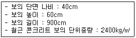
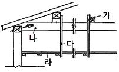
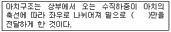
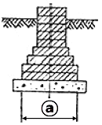
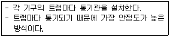
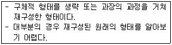

전산응용건축제도기능사 (2015-10-10 기출문제)
1과목: 건축구조
1. 지붕물매 중 되물매에 해당하는 것은?
- 4㎝ 물매
- 5㎝ 물매
- 10㎝ 물매
- 12㎝ 물매
(정답률: 77%)

2. 다음과 같은 조건에서 철근콘크리트 보의 중량은?

- 5184kg
- 518.4kg
- 2592kg
- 259.2kg
(정답률: 62%)
3. 다음 그림은 일반 반자의 뼈대를 나타낸 것이다. 각 기호의 명칭이 옳지 않은 것은?

- 가 - 달대받이
- 나 - 지붕보
- 다 - 달대
- 라 - 처마도리
(정답률: 79%)
4. 철근콘크리트구조의 특성으로 옳지 않은 것은?
- 부재의 크기와 형상을 자유자재로 제작할 수 있다.
- 내화성이 우수하다.
- 작업방법, 기후 등에 영향을 받지 않으므로 균질한 시공이 가능하다.
- 철골조에 비해 내식성이 뛰어나다.
(정답률: 73%)
5. 목조 벽체에 관한 설명으로 옳지 않은 것은?
- 평벽은 양식구조에 많이 쓰인다.
- 심벽은 한식구조에 많이 쓰인다.
- 심벽에서는 기둥이 노출된다.
- 꿸대는 평벽에 주로 사용한다.
(정답률: 72%)
6. 다음 ( )에 알맞은 용어는?

- 인장력
- 압축력
- 휨모멘트
- 전단력
(정답률: 65%)
7. 철근콘크리트구조에서 최소피복두께의 목적에 해당되지 않는 것은?
- 철근의 부식방지
- 철근의 연성감소
- 철근의 내화
- 철근의 부착
(정답률: 64%)
8. 다음 중 콘크리트 설계기준 강도를 의미하는 것은?
- 콘크리트 타설 후 28일 인장 강도
- 콘크리트 타설 후 28일 압축 강도
- 콘크리트 타설 후 7일 인장 강도
- 콘크리트 타설 후 7일 압축 강도
(정답률: 76%)
9. 창호와 창호철물의 연결에서 상호 관련성이 없는 것은?
- 오르내리창 – 크레센트
- 여닫이문 - 도어체크
- 행거도어 – 실린더
- 자재문 - 자유경첩
(정답률: 70%)
10. 보와 기둥 대신 슬래브와 벽이 일체가 되도록 구성한 구조는?
- 라멘구조
- 플랫슬래부 구조
- 벽식구조
- 셀구조
(정답률: 63%)
11. 횡력을 받는 벽을 지지하기 위해서 설치하는 구조물은?
- 버트레스
- 커튼윌
- 타이바
- 컬럼밴드
(정답률: 67%)
12. 스틸 하우스에 대한 설명으로 옳지 않은 것은?
- 벽체가 얇기 때문에 결로현상이 발생하지 않는다.
- 공사기간이 짧고 자재의 낭비가 적다.
- 내부 변경이 용이하고 공간 활용이 효율적이다.
- 얇은 천장을 통해 방 사이의 차음이 문제가 된다.
(정답률: 80%)
13. 다음 중 플레이트 보의 구성과 가장 관계가 적은 것은?
- 커브플레이트
- 웨브플레이트
- 스티프너
- 데크플레이트
(정답률: 61%)
14. 강제 계단의 특징으로 옳지 않은 것은?
- 건식 구조이다.
- 형태구성이 비교적 자유로운 편이다.
- 철근콘크리트 계단에 비해 무게가 무겁다.
- 내화성이 부족하다.
(정답률: 68%)
15. 사각형 단면의 철근콘크리트 기둥에서 띠철근을 사용하는 가장 주된 목적은?
- 주근의 좌굴을 막기 위하여
- 주근 단면을 보강하기 위하여
- 콘크리트의 압축 강도를 증가시키기 위하여
- 콘크리트의 수축 변형을 막기 위하여
(정답률: 71%)
16. 건축구조의 부재에 발생하는 단면력의 종류가 아닌 것은?
- 풍하중
- 전단력
- 축방향력
- 휨모멘트
(정답률: 69%)
17. 목구조에서 버팀대와 가새에 대한 설명 중 옳지 않은 것은?
- 가새의 경사는 45°에 가까울수록 유리하다.
- 가새는 하중의 방향에 따라 압축응력과 인장응력이 번갈아 일어난다.
- 버팀대는 가새보다 수평력에 강한 벽체를 구성한다.
- 버팀대는 기둥 단면에 적당한 크기의 것을 쓰고 따내기도 되도록 적게 한다.
(정답률: 54%)
18. 기본벽돌(190×90×57㎜)로 벽체두께를 1.0B로 쌓을 때 그 두께로 옳은 것은?
- 90㎜
- 190㎜
- 210㎜
- 290㎜
(정답률: 76%)
19. 벽돌조의 기초에서 ⓐ의 길이는 얼마정도가 가장 적당한가? (단, t는 벽두께)

- 1t
- 2t
- 3t
- 4t
(정답률: 71%)
20. 트러스 구조에 대한 설명으로 옳지 않은 것은?
- 지점의 중심선과 트러스절점의 중심선은 가능한 일치시킨다.
- 항상 인장력을 받는 경사재의 단면이 가장 크다.
- 트러스의 부재중에는 응력을 거의 받지 않는 경우도 생긴다.
- 트러스의 부재의 절점은 핀접합으로 본다.
(정답률: 52%)
2과목: 건축재료
21. 테라코타에 대한 설명으로 옳지 않은 것은?
- 장식용 점토 소성 제품이다.
- 건축물의 난간, 주두, 돌림띠 등에 사용된다.
- 일반 석재보다 무겁고 1개의 크기는 m3 이상이 적당하다.
- 복잡한 모양의 것은 형틀에 점토를 부어 넣어 만든다.
(정답률: 67%)
22. 운모계와 사문암계 광석으로 800~1000℃로 가열하면 부피가 5~6배로 팽창되며, 비중이 0.2~0.4인 다공질 경석으로 단열, 흡음, 보온 효과가 있는 것은?
- 부석
- 탄각
- 질석
- 펄라이트
(정답률: 64%)
23. 화재의 연소방지 및 내화성의 향상을 주목적으로 하는 재료는?
- 아스팔트
- 석면시멘트판
- 실링재
- 글라스 울
(정답률: 60%)
24. 콘크리트 구조물에서 하중을 지속적으로 작용시켜 놓을 경우 하중의 증가가 없음에도 불구하고 지속하중에 의해 시간과 더불어 변형이 증대하는 현상은?
- 액상화
- 블리딩
- 레이턴스
- 크리프
(정답률: 66%)
25. 시멘트의 일반적 성질에 관한 설명으로 옳은 것은?
- 시멘트의 강도는 콘크리트의 강도에 영향을 주지 않는다.
- 시멘트이 분발이 미세할수록 건조수축은 작아져 균열이 발생하지 않는다.
- 시멘트와 물을 혼합시키면 포졸란 반응이 일어난다.
- 일반적으로 분말도가 큰 시멘트일수록 응결 및 강도의 증진율이 크다.
(정답률: 54%)
26. 다음 중 결로(結露)현상 방지에 가장 적합한 유리는?
- 무늬유리
- 강화판유리
- 복층유리
- 망입유리
(정답률: 79%)
27. 열경화성수지 중 건축용으로는 글라스섬유로 강화된 평판 또는 판상제품으로 주로 사용되는 것은?
- 아크릴수지
- 폴리에스테르수지
- 염화비닐수지
- 폴리에틸렌수지
(정답률: 61%)
28. 돌로마이트 플라스터 관한 설명으로 옳지 않은 것은?
- 가소성이 커서 불이 필요 없다.
- 경화 시 수축률이 매우 크다.
- 수경성이므로 외벽 바름에 적당하다.
- 강알칼리성이므로 건조 후 바로 유성페인트를 칠할 수 없다.
(정답률: 46%)
29. 다음 목재 제품 중 일반건물의 벽 수장재로 사용되는 것은?
- 플로링 보드
- 코펜하겐 리브
- 파키트리 패널
- 파키트리 블록
(정답률: 72%)
30. 강재의 인장강도가 최대가 되는 온도는 대략 어느 정도인가?
- 0℃
- 150℃
- 250℃
- 500℃
(정답률: 70%)
31. KS F 3126(치장 목절 마루판)에서 요구하는 치장 목질 마루판의 성능기준과 관련된 시험항목에 해당되지 않는 것은?
- 내마모성
- 압축강도
- 접착성
- 포름알데히드 방산량
(정답률: 43%)
32. 화강암에 관한 설명으로 옳지 않은 것은?
- 내화성은 석재 중에서 가장 큰 편이다.
- 주요 광물은 석영과 장석이다.
- 콘크리트용 골재로도 사용된다.
- 구조재 및 수장재로 쓰인다.
(정답률: 56%)
33. 목면, 마사, 양모, 폐지 등을 혼합하여 만든 원지에 스트레이트 아스팔트를 침투시킨 두루마리 제품 이름은?
- 아스팔트 루핑
- 아스팔트 싱글
- 아스팔트 펠트
- 아스팔트 프라이머
(정답률: 66%)
34. 다음 중 재료와 그 사용용도의 연결이 옳지 않은 것은?
- 테라죠 – 벽, 바닥의 수장재
- 트래버틴 – 내벽 등의 수장재
- 타일 – 내외벽, 바닥의 수장재
- 테라코타 - 흡음재
(정답률: 80%)
35. 다음 중 열전도율이 가장 낮은 것은?
- 콘크리트
- 목재
- 알루미늄
- 유리
(정답률: 65%)
36. 점토제품 중 타일에 대한 설명으로 옳지 않은 것은?
- 자기질 타일의 흡수율은 3% 이하이다.
- 일반적으로 모자이크타일은 건식법에 의해 제조된다.
- 클링커 타일은 석기질 타일이다.
- 도기질 타일은 외장용으로만 사용된다.
(정답률: 68%)
37. 단열재의 조건으로 옳지 않은 것은?
- 열전도율이 높아야 한다.
- 흡수율이 낮고 비중이 작아야 한다.
- 내화성, 내부식성이 좋아야 한다.
- 가공, 접착 등의 시공성이 좋아야 한다.
(정답률: 75%)
38. 결합재의 하나로서 미장 재료에 혼입하여 보강, 균열 방지의 역할을 하는 섬유질 재료를 무엇이라 하는가?
- 풀
- 여물
- 골재
- 안료
(정답률: 72%)
39. 목재의 착색에 사용하는 도료 중 가장 적당한 것은?
- 오일스테인
- 연단도료
- 클리어 래커
- 크래오소트유
(정답률: 51%)
40. 금속의 부식작용에 대한 설명으로 옳지 않은 것은?
- 동판과 철판을 같이 사용하면 부식방지에 효과적이다.
- 산성인 흙속에서는 대부분의 금속재가 부식된다.
- 습기 및 수중에 탄산가스가 존재하면 부식작용은 한층 촉진된다.
- 철판의 자른 부분 및 구멍을 뚫은 주위는 다른 부분보다 빨리 부식된다.
(정답률: 70%)
3과목: 건축계획 및 제도
41. 실내공기오염의 종합적 지표가 되는 오염물질은?
- 먼지
- 산소
- 이산화탄소
- 일산화탄소
(정답률: 82%)
42. 대지에 이상전류를 방류 또는 계통구성을 위해 의도적이거나 우연하게 전기회로를 대지 또는 대지를 대신하는 전도체에 연결하는 전기적인 접속은?
- 접지
- 분기
- 절연
- 배전
(정답률: 84%)
43. 건축제도에서 반지름을 표시하는 기호는?
- D
- ∅
- R
- W
(정답률: 83%)
44. 엘리베이터가 출발 기준층에서 승객을 싣고 출발하여 각 층에 서비스 한 후 출발 기준층으로 되돌아와 다음 서비스를 위해 대기하는 데까지 총시간을 무엇이라 하는가?
- 주행시간
- 승차시간
- 일주시간
- 가속시간
(정답률: 80%)
45. 한식주택에 관한 설명으로 옳지 않은 것은?
- 공간의 융통성이 낮다.
- 가구는 부수적인 내용물이다.
- 평면은 실의 위치별 분화이다.
- 각 실이 마루로 연결된 조합 평민이다.
(정답률: 76%)
46. 계단실형 아파트에 관한 설명으로 옳지 않은 것은?
- 거주의 프라이버시가 높다.
- 채광, 통풍 등의 거주 조건이 양호하다.
- 통행부 면적을 크게 차지하는 단점이 있다.
- 계단실에서 직접 각 세대로 접근할 수 있는 유형이다.
(정답률: 71%)
47. 다음 중 단면도에 표시되는 사항은?
- 반자높이
- 주차동선
- 건축면적
- 대지경계선
(정답률: 70%)
48. 다음 중 주택공간의 배치계획에서 다른 공간에 비하여 프라이버시 유지가 가장 요구되는 곳은?
- 현관
- 거실
- 식당
- 침실
(정답률: 90%)
49. 투상도의 종류 중 X, Y, Z의 기본 축이 120°씩 화면으로 나누어 표시되는 것은?
- 등각 투상도
- 유각 투상도
- 이등각 투상도
- 부등각 투상도
(정답률: 70%)
50. 건축허가신청에 필요한 설계도서에 속하지 않는 것은?
- 배치도
- 평면도
- 투시도
- 건축계획서
(정답률: 69%)
51. 사회학자 숑바르 드 로브(Chombard de lauw)의 주거면적 기준 중 한계기준으로 옳은 것은?
- 8m2/인
- 10m2/인
- 14m2/인
- 16.5m2/인
(정답률: 54%)
52. 건축제도의 치수 기입에 관한 설명으로 옳은 것은?
- 치수는 특별히 명시하지 않는 한, 마무리 치수로 표시한다.
- 치수 기입은 치수선을 중단하고 선의 중앙에 기입하는 것이 원칙이다.
- 치수의 단위는 밀리미터(mm)를 원칙으로 하며, 반드시 단위 기호를 명시하여야 한다.
- 치수 기입은 치수선에 평행하게 도면의 오른쪽에서 왼쪽으로 읽을 수 있도록 기입한다.
(정답률: 62%)
53. 건물 각층 벽면에 호스, 노즐, 소화전 밸브를 내장한 소화전함을 설치하고 화재 시에는 호스를 끌어낸 후 화재 발생지점에 물을 뿌려 소화시키는 설비는?
- 드렌처설비
- 옥내소화전설비
- 옥외소화전설비
- 스프링클러설비
(정답률: 79%)
54. 증기난방에 관한 설명으로 옳지 않은 것은?
- 예열시간이 짧다.
- 한랭지에서는 동결의 우려가 적다.
- 증기의 현열을 이용하는 난방이다.
- 부하변동에 따른 실내 방열량의 제어가 곤란하다.
(정답률: 49%)
55. 다음 설명에 알맞은 통기 방식은?

- 각개통기방식
- 루프통기방식
- 회로통기방식
- 신정통기방식
(정답률: 83%)
56. 다음 설명에 알맞은 형태의 종류는?

- 자연적 형태
- 현실적 형태
- 추상적 형태
- 이념적 형태
(정답률: 82%)
57. 제도용지 A2의 크기는 A0용지의 얼마 정도의 크기인가?
- 1/2
- 1/4
- 1/8
- 1/16
(정답률: 79%)
58. 주택의 다이닝 키친(dining kitchen)에 관한 설명으로 옳지 않은 것은?
- 면적 활용도가 높아 효율적이다.
- 주부의 가사 노동량을 줄일 수 있다.
- 소규모 주택에서는 적용이 곤란하다.
- 이상적인 식사 공간 분위기 조성이 어렵다.
(정답률: 70%)
59. 투시도법에 사용되는 용어의 표시가 옳지 않은 것은?
- 시점 : E.P
- 소점 : S.P
- 화면 : P.P
- 수평면 : H.P
(정답률: 66%)
60. 형태의 조화로서 황금비례의 비율은?
- 1 : 1
- 1 : 1.414
- 1 : 1.618
- 1 : 3.141
(정답률: 83%)